如何在 Roo Code 使用 VSCode 的內建 Markitdown MCP Server 功能
VSCode 在1.102 版本內建跑 MCP Server 功能，可以使用Marktplace 功能直接在 VSCode 內安裝＆跑 Markitdown MCP Server，給內建的 GithHub Copilot Chat AI 模型使用。
而由於Roo Code 也支援呼叫 MCP Server 功能，所以我們也可以在 Roo Code 內做好相關設定，讓 Roo Code 配套的 LLM AI 模型去呼叫 VSCode 的 Markitdown MCP Server，而不僅僅專屬於 GitHub Copilot Chat 獨佔使用。
安裝並啟動 VSCode 的 Markitdown MCP Server
啟用 VSCode 內建的 MCP Server 功能並安裝 Markitdown MCP Server
雖然 VSCode 內建 MCP Server 功能，但由於資安考量，預設是沒有啟用直接從GitHub MCP Server Registry安裝，所以我們需要先在 VSCode 的設定中啟用，或在擴充套件安裝側邊欄介面中啟用：
- 在 VSCode 側邊欄選擇 Extensions (擴充套件) 圖示時，最下方的 MCP SERVERS 介面，展開預設是空的，並且沒有任何滑鼠/鍵盤選單可以操作:
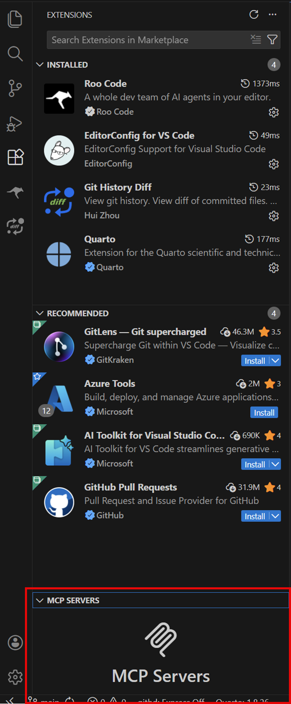
- 在最上方的搜尋欄輸入
@mcp，這時會出現詢問是否要啟用 MCP Server Marketplace 的UI提示，按下方的 “Enable MCP Marketplace” 按鈕: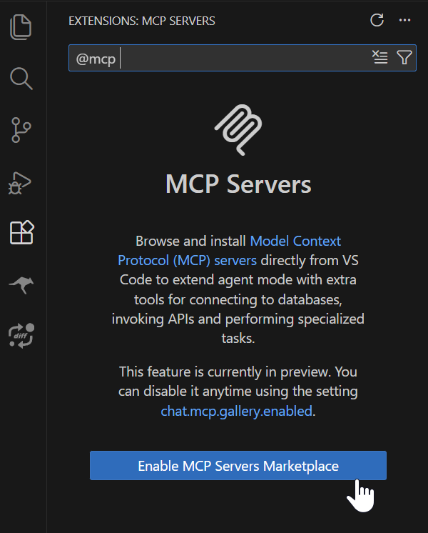
接著會跳出確認視窗，按下 “Enable” 按鈕: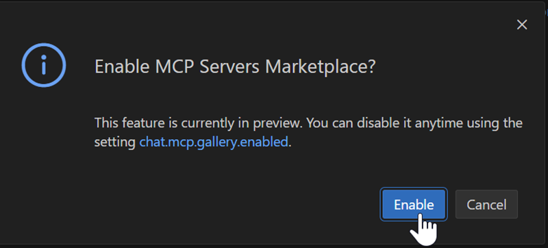
- 啟用後，此時 VSCode 左側的擴充套件側邊欄UI會顯示各種可安裝的 MCP Server 清單，繼續在上方的搜尋欄輸入英文字
markitdown，就會出現 Markitdown MCP Server 擴充套件，按下 “Install” 按鈕安裝: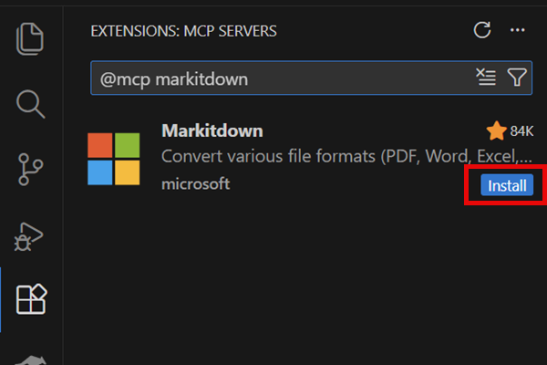
- 安裝完畢後，會在 MCP SERVERS 介面看到 Markitdown MCP Server 已經安裝完成:
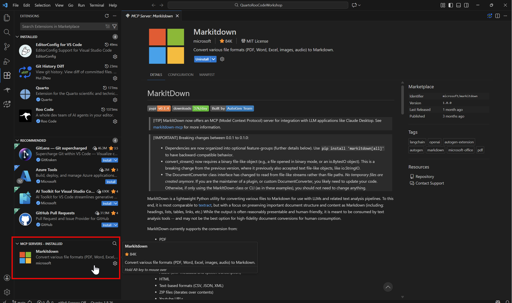
啟動 Markitdown MCP Server
- 安裝 Markitdown MCP Server 完成後，在 MCP SERVERS 介面中，在 Markitdown 項目按滑鼠右鍵或是滑鼠左鍵點選右下角齒輪圖示開啟功能選單，選擇 “Start” 以啟動 Markitdown MCP Server:
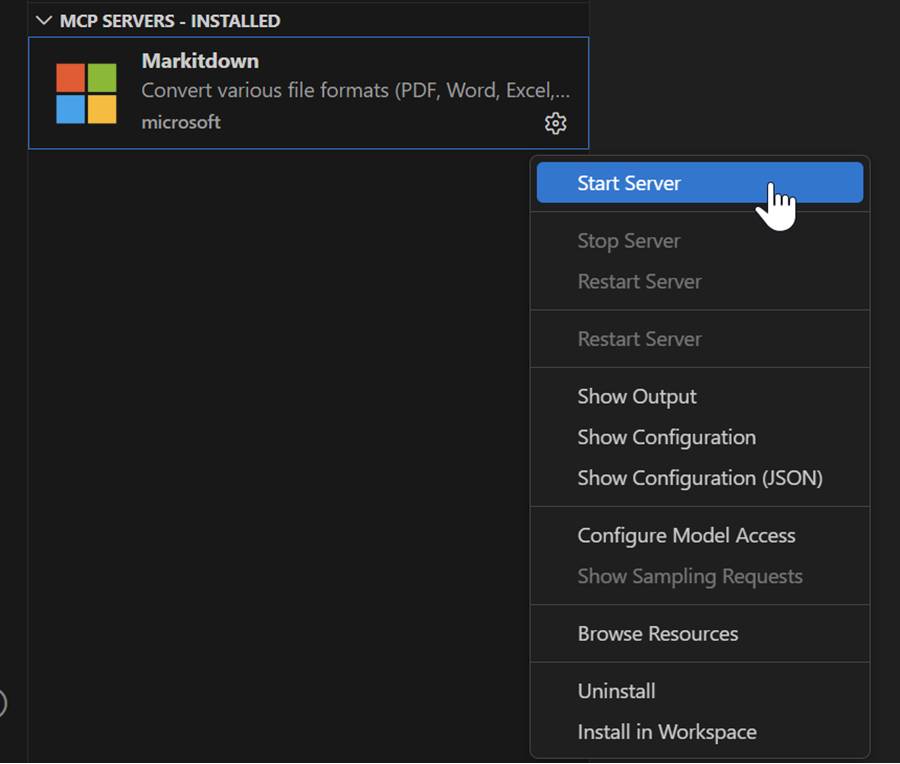
- 注意，此時如果你的電腦環境沒有安裝uv這個 Python 新的套件管理程式的話，會跳出提示視窗詢問你是否要安裝 uv，按下右側的 “Install” 按鈕:
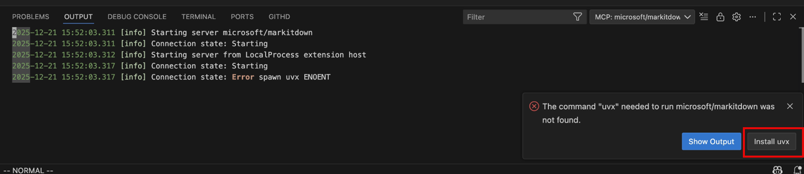
然後其實會根據你使用的作業系統，自動幫你安裝 uv ，或是跳出uv 官方的安裝說明頁面，依照指示安裝 uv 即可。 - 安裝完 uv 後，再次在 MCP SERVERS 介面中，在 Markitdown 項目按滑鼠右鍵或是滑鼠左鍵點選右下角齒輪圖示開啟功能選單，選擇 “Start” 以啟動 Markitdown MCP Server，這次在 VSCode 自動導引 uv 安裝 Markitdown 需要的套件之後應會成功啟動，並且在下方的 Output (輸出) 視窗中看到 Markitdown MCP Server 的
[info] Connection state: Running成功啟動log訊息：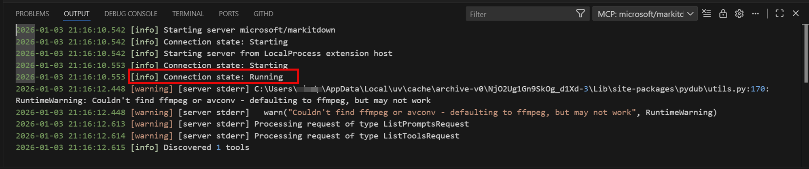
如果如圖所示有看到 ffmpeg 的相關訊息，如果沒有需要用到 Markitdown 的語音轉文字功能的話，基本上此時 MCP Server 已經是可以正常運作了，可以不必安裝 ffmpeg。
在 Roo Code 中設定使用 VSCode 的 Markitdown MCP Server
在 VSCode 成功啟動 Markitdown MCP Server 後，接著我們要在 Roo Code 中設定使用這個 MCP Server：
- 在 Markitdown MCP Server 啟動成功後，在 VSCode 的 MCP SERVERS 介面中，按滑鼠右鍵或是滑鼠左鍵點選右下角齒輪圖示開啟功能選單，選擇 “Show Configuration (JSON)”：
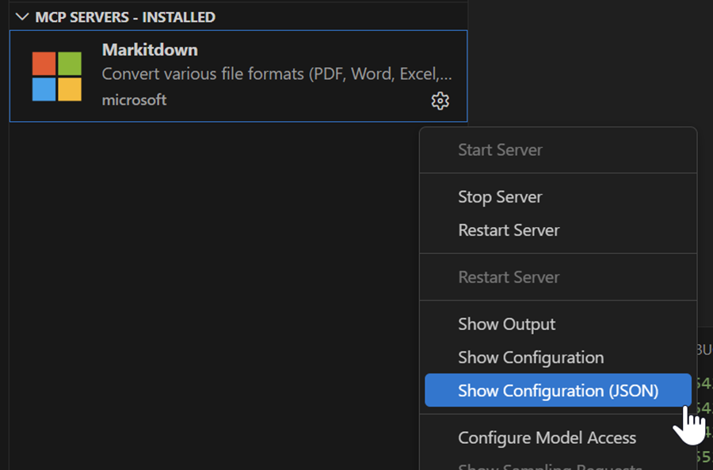
- 這時會打開一個新的 VSCode 編輯視窗，裡面是 Markitdown MCP Server 的設定檔內容，複製
servers: {}區塊的內容: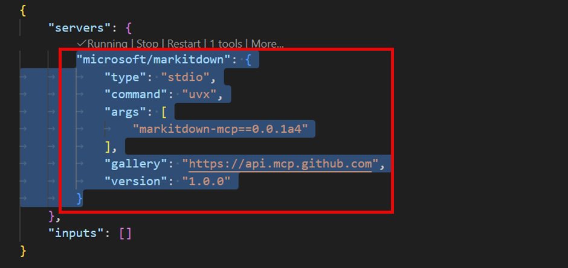
- 接著打開 Roo Code 設定 MCP 的介面，選擇 “Edit Project MCP” 按鈕:
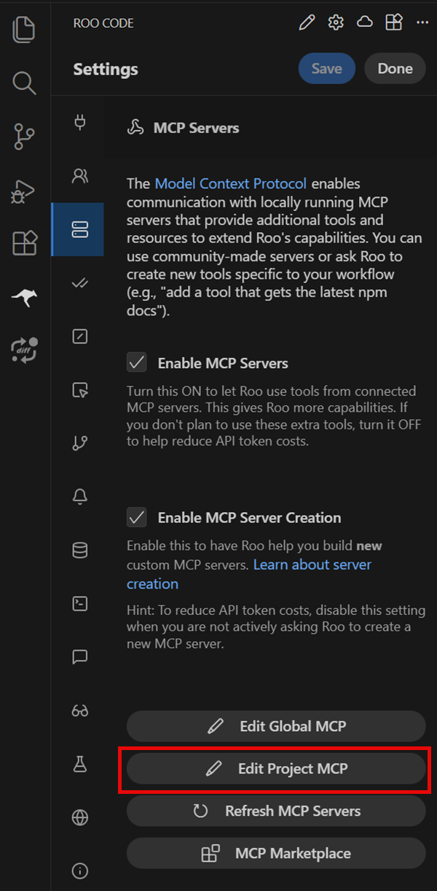
- 此時會建立在專案目錄下 .roo 目錄內的 mcp.json 檔案，並且 VSCode 會自動開啟之，將剛剛複製的 Markitdown MCP Server 設定內容貼上:
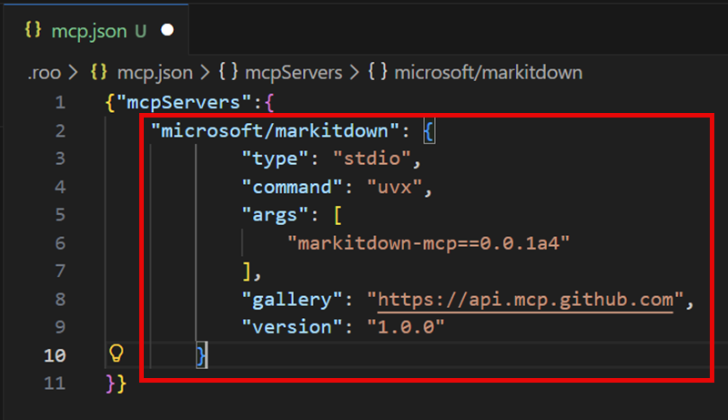
然後存檔關閉此檔案。
之後就可以在 Roo Code 中讓 Roo Code 配套的 LLM AI 模型去呼叫 VSCode 的 Markitdown MCP Server 了。
例如以下是使用 Roo Code 設定使用 Mistral AI 模型，並且透過 Markitdown MCP Server 去轉換一個 .docx 報價單檔案後，可成功展示報價單表格的範例：
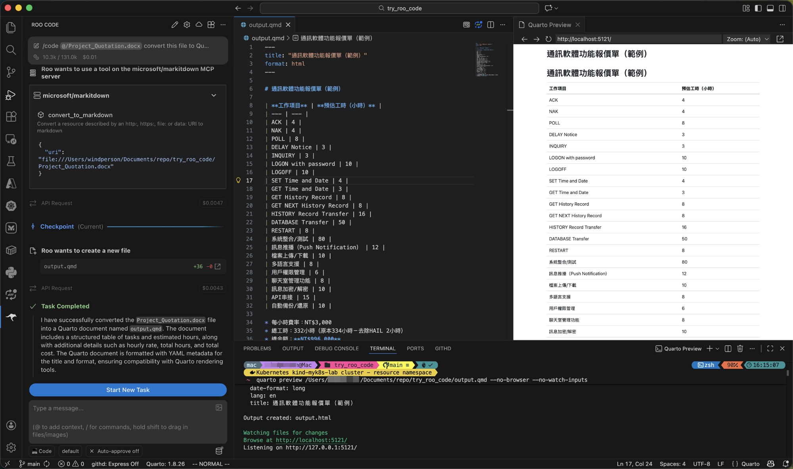